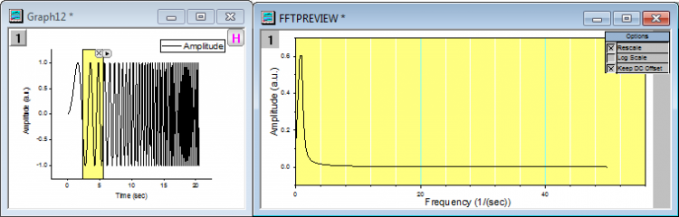

Minitools
GSB-Gadgets-tutorial
In dieser Lektion verwenden Sie Minitools, um eine untersuchende Analyse der Daten in einem Diagramm durchzuführen.
Minitool Integration
- Starten Sie mit dem Projekt, das Sie in der letzten Lektion gespeichert haben, und fügen Sie einen neuen Ordner mit dem Namen Minitools auf der Hauptebene des Projekt Explorers hinzu. Gehen Sie dann zu diesem Ordner.
- Wählen Sie bei aktiver neuer Arbeitsmappe Hilfe: Ordner öffnen: Sample-Ordner ... im Menü, um den Ordner "Samples" zu öffnen. Öffnen Sie in diesem Ordner den Unterordner Curve Fitting. Dort befindet sich die Datei Multiple Gaussians.dat. Ziehen Sie diese Datei per Drag&Drop in das leere Arbeitsblatt, um sie zu importieren.
- Es werden Langnamen für die Datensätze hinzugefügt. Geben Sie "Peak 1" in der Beschriftungszeile Langname von Spalte B ein. Klicken Sie und wählen Sie die Zelle des Langnamens aus. Bewegen Sie die Maus dann zur unteren rechten Ecke der Zelle, so dass sich der Cursor in ein "+" verwandelt. Klicken Sie mit der linken Maustaste und ziehen Sie sie von Spalte C bis Spalte E. Origin füllt die Namen automatisch mit Peak 2, Peak 3 und Peak 4 aus.
- Klicken Sie und ziehen Sie die Maus über die Spaltenheader, um die Spalten B bis E zu markieren. Wählen Sie Zeichnen: Einfache 2D: Gestapelte Linien mit Y-Versatz im Hauptmenü, um ein gestapeltes Liniendiagramm zu erstellen.
- Wählen Sie bei aktivem Diagramm Minitools: Integration im Hauptmenü.
- Übernehmen Sie die Standardeinstellungen und klicken Sie auf die Schaltfläche OK. Die grafische Datenauswahl ROI (Region of Interest) wird in dem Diagramm platziert. Verschieben Sie und/oder Ändern Sie die Größe des ROI-Objekts, um einen gewünschten Bereich der Daten zu umfassen.
- Klicken Sie auf die dreieckige Schaltfläche in der oberen rechten Ecke der grafischen Datenauswahl und wählen Sie Einstellungen, um den Dialog erneut zu öffnen.
- Klicken Sie auf die Registerkarte Ausgabe, erweitern Sie den Zweig Eigenschaften ausgeben in und aktivieren Sie das Kontrollkästchen An Worksheet anhängen. Klicken Sie auf OK, um den Dialog zu schließen.
- Wenn es mehrere Zeichnungen in einem Layer gibt, verarbeitet das Minitool standardmäßig die aktive Datenzeichnung. In diesem Fall ist die aktive Zeichnung Peak 1. Um die Daten zum Beispiel in Peak 3 zu ändern, klicken Sie auf die dreieckige Schaltfläche oben rechts von dem ROI-Feld und wählen Daten ändern: Plot(3): Peak 3 im Kontextmenü.
- Klicken Sie erneut auf die dreieckige Schaltfläche und wählen Sie Neue Ausgabe für alle Kurven. Es wird eine Arbeitsmappe mit Integrationsergebnissen für alle Kurven erzeugt. Klicken Sie auf die dreieckige Schaltfläche und wählen Sie Zum Berichtsblatt gehen, um zur Ausgabearbeitsmappe zu wechseln.
- Klicken Sie auf die Schaltfläche X in der oberen rechten Ecke der grafischen Datenauswahl im Diagramm, um das Minitool zu entfernen.
Minitool FFT
- Öffnen Sie eine neue Arbeitsmappe und importieren Sie die Datei <Origin-Verzeichnis>\Samples\Signal Processing\Chirp Signal.dat.
- Markieren Sie Spalte B und wählen Sie Zeichnen > Einfache 2D: Liniendiagramm im Hauptmenü. um ein Liniendiagramm zu zeichnen.
- Wählen Sie bei aktivem Diagramm Minitools: FFT im Hauptmenü. Übernehmen Sie die Standardeinstellungen in dem aufgerufenen Dialog und klicken Sie auf OK. Ein ROI-Feld wird im Diagramm positioniert. Außerdem wird ein weiteres Diagramm mit dem Namen FFTPREVIEW erstellt, das das FFT-Ergebnis anzeigt.
- Deaktivieren Sie in der oberen rechten Ecke des Diagramms FFTPREVIEW das Kontrollkästchen Log Scale. Positionieren Sie dann das Quellliniendiagramm und das Fenster FFTPREVIEW nebeneinander. Verschieben Sie und Ändern Sie die Größe des ROI-Objekts, um einen kleinen Bereich des Anfangs der Datenkurve zu umfassen.
- Sie können jetzt die Pfeiltasten dazu verwenden, das ROI-Feld nach rechts zu verschieben, während Sie das FFT-Ergebnis im anderen Diagramm dabei beobachten, wie es aktualisiert wird.

-
Speichern Sie die Projektdatei.